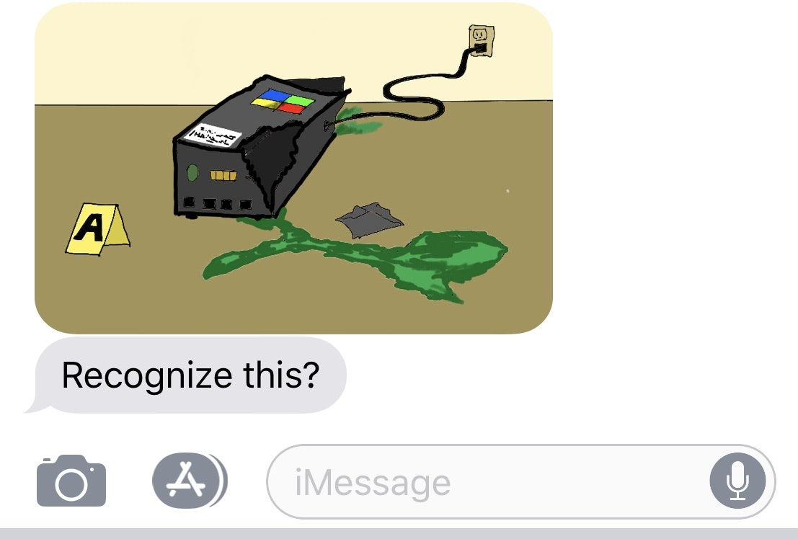
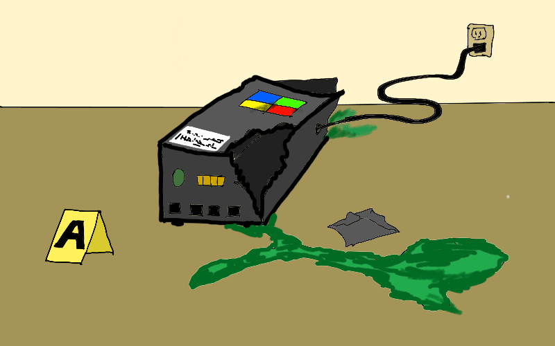

The Shtickbox Affair
A shtick, in the traditional Yiddish sense, is[1]
“a comic theme or gimmick derived from the Yiddish word shtik (שטיק), from Polish sztuka and German Stück (Proto-Slavic *ščuka), meaning "piece" or "thing".
Shticks are ubiquitous in the indie consulting economy, so in order to truly cultivate the Art of Gig, you must gain a true understanding of shticks, and in particular, learn to tell them apart from genuine systems. Let me tell you about a very instructive case that drove this distinction home for me a few years ago.
I got involved in the case thanks to my friend Agent Jane Jopp of the FBI G-Crimes division, whom you met a couple of episodes ago, in The Two Shadows of the Hero. The case I want to tell you about unfolded almost immediately after that one, and really gets at the essence of shticks.
It all began with a text and photograph from Jopp popping up on my phone one balmy afternoon, as I was relaxing at my local Starbucks, trawling through Twitter for gig leads, and trying to @ known millionaires into giving me money.

She called a few minutes later, launching right into it without a preamble, as she usually does. Her manner’s only gotten more peremptory since I’ve known her, though becoming a grandmother recently has mellowed her out a bit.
“Did you see the picture? Look familiar?”
It’s tempting, as a consultant, to pretend you’ve heard of everything, but long-term, it saves time, and makes it easier to build credibility, if you make it a habit to be blunt about what you know and don’t know.
“Not a clue.”
“Ever heard of Scorpion Arts Software?”
“No, should I have?”
“No reason you should have. Boutique security systems contractor, couple of miles north of downtown. Get your ass up here, Rao. You’re gonna want in on this I think. I’ve never seen anything like it.”
I was there in 15 minutes. Scorpion Arts was an unremarkable single-storied building within a premium-mediocre business park. It had been cordoned off. Several cop cars and unmarked black SUVs were parked outside.
In the parking lot, I noticed familiar dark blue BMW as well. My old frenemy Guanxi Gao was on the scene as well!
As you may recall, I had introduced Gao to the G-Crimes division following the events of the Bermuda Triangle case only a few weeks earlier, and it had taken Gao no time at all to get cozier with Jane Jopp than I myself am.
I’m used to that sort of thing. One thing you’ll learn in the gig economy is that people vary in their ability to get close to, and comfortable with, important professional contacts, and you have to learn to accept your own natural operating distance with different sorts of people. Gao quietly gets very close to all people, and before they know it, he’s turned into their closest confidant. I talk a lot more but tend to maintain an arms-length distance with all professional contacts and clients. To each their own, so long as it works for you.
Jopp was outside talking to Gao. She motioned to the beat cop guarding the perimeter, who nodded at me and raised the crime-scene tape. I ducked under and joined them. Gao gave me his usual sleepy nod.
“Agent Jopp. Gao. How’s gigs?” I said.
“Hey Rao, I just got here,” said Gao.
“Come with me, both of you,” said Jopp, in her usual peremptory way.
We followed her into the building. It was just a few rooms. A dozen or so people were visible in the main conference room, behind the reception area, through the glass. Several agents and uniformed cops seemed to be doing various things all over the premises.
Jopp said, “The ones in the conference room, that’s all the people who work here. The guy presenting is the VP of Product. Notice anything unusual?”
Gao and I peered into the room through the glass. It seemed like a normal business meeting in progress. Almost normal.
Gao was frowning.
“Something’s off, but I can’t put my finger on it,” I said.
Gao nodded, “Yeah. They look a little tired maybe?”
Agent Jopp seemed pleased with herself at having stumped us both.
“It was the night janitor who called in the cops. We got called in this morning. Apparently, they’ve been having exactly the same 55-minute meeting, over and over in a loop, for almost twenty four hours straight, including through the night.”
“What do you mean?”
“The same presenters talk through the same slide deck, and the others in the room make exactly the same remarks. They go on for precisely 55 minutes, then they take a 5-minute coffee break, come back in, and start over. Watch, they’re due to break now.”
As if on cue, the people in the conference room got up, and filed out, and headed across to the break room on the left, ignoring us.
“It’s Thursday now, they’ve been at it since yesterday afternoon as far as we can tell.”
Gao frowned, “when you say the same, do you mean…”
“Exactly the same, yes. Word for word. Gesture for gesture. Like a clockwork menagerie. Watch. That one over there is going to mention her kid’s soccer game.”
We watched them for a few minutes. The scene looked almost normal. They were getting coffee, a few headed to the bathrooms at the far end. There was the normal sort of office banter.
Normal that is, except that Jane Jopp was whispering to us in an undertone exactly what they would be saying, before they said it. It was eerie.
“Has anybody tried, you know, asking them what they’re up to?” I asked.
Jopp shook her head. “They just ignore everybody outside their own group and carry on. It’s like we’re not even here.”
“Have you tried breaking up the meeting?” asked Gao.
“We tried holding one of them — that man in the black turtleneck, we think he’s the CEO — back after their coffee break one time, and he began this unearthly screaming. You don’t want to hear it, trust me.”
“What about the rest?”
“They went on as before. When they got to the part of the meeting, about 15 minutes in, where black-turtleneck guy makes one comment, they all just froze. So we let him go. He stopped screaming, went back to his chair, made his comment, and the meeting continued.”
Gao and I looked at each other and shrugged. Neither of us had seen anything like this before.
“Why is G-Crimes here? Is there a gig-economy angle? Are any of the people in the room consultants?” I asked.
“All employees as far as we can tell. Most of the executive team, plus a few middle managers. About a dozen in all. No consultants around as far as I can tell, but G-Crimes gets all the weird cases dropped in its lap these days. The whole corporate world is getting weird these days, and G-Crimes is in the middle of it.”
“What about other employees?” asked Gao.
“This is everybody who works out of this office. We are tracking down the head of the New York office. Lestrode’s in New York right now, working another case, so I have him running that end down on the side.”
“What about the slides they’re reviewing, the content of the meeting?” I asked.
“The techs got those off the presentation laptop the last time they were in a coffee break, we’re looking at it now. Nothing unusual as far as we can tell, some sort of product-roadmap discussion. Probably make more sense to you two than me.”
“Can we see?” asked Gao.
Jopp shrugged and motioned to a junior agent, an IT-nerd type, who brought over a laptop with some slides showing.
I flipped through them. A Gantt chart[2], some spider charts[3], a Pugh matrix[4]. Some bullet-lists. All-in-all, a fairly routine-looking product roadmap deck for a software company.
Still, there was something off about the deck.
Gao was the one who spotted it.
“The names are all weird. They’ve labeled that Gantt chart Core Activity Tracker™”
“Ah, you’re right. And those spider charts are labeled, Product Shape Charts™ and the Pugh matrices, they’re labeled Feature Attribute Model,™” I said.
“Very designed look too. These came from a template.” added Gao.
Jopp interrupted, “Fine, so people make up different names for the same ideas all the time, what’s significant about that?”
“Coupled with a consistent, hyper-coherent presentation aesthetic, it’s a telltale sign of an active shtick, and this one is particularly brazen,” I said. “There may be no consultants in the room, but they’re in the room. A ghost, or ghosts, in the machine.”
“‘Shticking in the first-degree, by ghosts or ghosts in the machine, unknown,’ huh?” said Jopp.
“There will be a bad acronym in here somewhere,” said Gao, reaching over to flip through the slides again, “Here it is. In all the footers. CAPSFA-4 Review.”
“That mean anything to either of you?” asked Jopp.
Gao shook his head.
I said, “I’ll take a guess. Core Activity, Product Shape, Feature Attribute. CA-PS-FA. The 4 probably indicates it’s some sort of 4x formula.”
Jopp looked annoyed. “So? Where does that get us?”
“A shtick in the gig economy, especially on the management side, is a bunch of familiar, warmed-over, formulaic elements of cookie-cutter analysis and procedural synthesis, rebranded and packaged into a ‘comprehensive step-by-step system’ of some sort,” I explained.
Jopp frowned. “What’s wrong with that? Isn’t that what all you guys do? Sell color-by-number management systems to companies? Some of it is bullshit, some of it is not, right?”
I sighed. “Nothing wrong with it per se. It’s all about context and situation. Deployed one way, a system is just another tool. Adapt and apply as needed. Deployed another way, though, as a sacralized, mystical panacea, it becomes a shtick. Generally the mark of a second-rate operator who has found a lucrative vein of third-rate clients to mine.”
“Sounds like a precious-snowflake distinction to me. Or am I hearing some sour grapes here? You two don’t have shticks, do you?”
I ignored the jibe. “It’s hard to explain. It’s like the difference between artistic nudes and porn. You’ve heard the term productivity porn, right? A shtick is a system with porn-like characteristics.”
“Culture porn, meeting porn, strategy porn, chart porn, efficiency porn, negotiation porn, sales porn, you’ve got all sorts. Name it, there’s consulting porn of it.” Gao sniggered.
I elaborated. “Systems that work are evolved from — systematized from — wild local patches of behavioral effectiveness. What we call Gall’s Law[5]. Shticks on the other hand, are made up from whole cloth to fuel a theatrical performance of some sort. To look good…”
“…in a pornographic sense.” Gao finished delicately.
“Rule of thumb. If you can buy it, it’s a shtick. If you must grow it, it’s a system.” I finished my little mansplaining lecture.
Jopp waved us away impatiently. “Well, I don’t know where that gets us, but I haven’t shown you two the other thing yet.”
“Ah the picture you sent,” I said, and turned to Gao, “did you recognize it?
Gao shook his head. Well, at least we were even on that score.
“It’s over there in the break room,” Jopp motioned us to follow.
We followed her. The device was in a corner, plugged into an outlet.

“We originally found it inside an air vent behind the snack machine, oozing that green fluid. The techs ran toxicity tests, and it seems safe. We’ve plugged it back in because it seems to be transmitting an encrypted telemetry signal somewhere. We’re trying to trace it. It seems to periodically ping a server somewhere in Asia and then send a burst transmission.”
Gao frowned and sniffed, “what’s that smell? It’s like lemon-and-mint-flavored ass.”
“It’s the green oozing stuff. The lab says it is some sort of custom-formulation kool-aid concentrate. They’re analyzing it. Not toxic…So neither of you has seen anything like it before?”
“No. Apart from the fact that it looks like a broken box with green stuff oozing out, I’ve got nothing,” I said.
“That logo… Microsoft?” asked Gao.
“No, the colors are in the wrong order. Obviously designed to look almost like Microsoft though,” said Jopp.
“Looks Chinese-made,” said Gao. “Want me to send a photo out to my contacts in Asia to see if they can identify it?”
Jopp, shrugged. “Why not, go ahead.”
Gao took a picture and sent it off to whatever mysterious contacts he thought might help.
“Let’s look at this logically,” Jopp said, “We have two unusual things in the Scorpion Arts building at the moment: a roomful of zombies stuck in an infinite-loop meeting, and a mysterious broken device leaking some kool-aid. They must be connected.”
“Three,” I corrected, “you’re forgetting the ultra-shticky slide deck they’re reviewing. I don’t think I’ve ever seen anything quite that shticky in my life.”
“Fine, if you think that’s relevant. Three weird things. What’s the connection?”
Gao, who had been stooped over, examining the broken device, straightened up.
“I think this thing is an aerosolizer. Like some sort of beefed-up air freshener.”
“Yes, the techs figured that out. As far as we can tell, it’s supposed to dilute and inject microdoses of that kool-aid into the air at set times. There’s a water lead too, which we disconnected. It looks like the canister ruptured and spilled the stuff.”
“What times?” I asked.
“The timer is set to release a dose every week, Wednesdays around 3 PM.”
“Do we know what’s on the corporate calendar at that time?”
Jane leaned out of the break room doorway and yelled for the IT guy, who scurried in with the laptop.
She barked at him, “Are we into the Intranet yet? Can we access their calendar? Look up what they have going on at 3 PM on Wednesdays.”
“There’s a second canister in there, with some red fluid,” said Gao, still examining the device. “This one seems intact.” He sniffed it. “Smells like tomatoes...Bloody Mary mix maybe?”
“Yes, we’re analyzing that too. That one’s not kool-aid, it’s set to go off at 9 AM on Thursdays, but we had the machine unplugged this morning, so it didn’t go off. That’s not toxic either, but we don’t know what it is yet.” said Jopp.
Inspiration struck, “I think I know what’s going on here,” I said.
Jopp and Gao looked at me inquiringly.
“I think it’s a shtick box. I’ve never seen a high-tech one like this, and I didn’t think anyone used them anymore, but I’ve seen traditional versions that work on incense in museums. Court consultants in the Middle East used them till the 15th century. They called it dabba al-khwarazimi, literally, algorithm box. The traditional kind is a wooden box with two compartments, each with an incense holder. You burn one kind of incense stick when you want to increase suggestibility and reinforce an idea, and another kind when you want to increase skepticism and encourage challenging of ideas. Fell out of use in the sixteenth century I believe.”
“Reminds me of something,” Jopp said, frowning, “Something about making decisions while drunk.”
“You’re probably thinking of that bit in Herodotus about the Persians making important decisions when drunk and then revisiting them in the morning when sober.”
“Yes of course. So the timer is set to release the first kind of chemical during a specific meeting, and the other kind on the morning after?”
“Yes, and since the canister broke…”
“…they got an overdose.”
“…and they’ve gotten themselves trapped in a procedurally generated kool-aid escaped reality based on a particularly powerful shtick, yes. That’s my theory.”
The tech looked up from his laptop.
“I can access the intranet now. They seem to have a standing meeting Wednesdays at 3. Subject line says CAPSFA-4 Review.”
Gao’s phone dinged. He looked at it, typed briefly, and looked up. “Looks like Rao was right. My friend Ohno in Tokyo recognized it. He says these are popular in Japan. They call them shtikuboxu over there. They’ve apparently gotten popular recently for instilling new management ideas.”
Gao looked thoughtfully at the shtick box. “The other fluid is supposedly the antidote; a sort of hangover cure. So in theory, if you hit them with an extra stiff dose of that, they should wake up… or break out of the infinite-meeting loop.”
Ten minutes later, we were ready to test the theory. We were gathered outside the conference room where the zombie meeting was still in progress. We had masks on.
“The techs don’t think the stuff is toxic, but they want to make sure.” Jopp had explained.
A technician entered the conference room in a hazmat suit, shut the door behind him, took out a plastic spray bottle with the diluted red fluid in it, and carefully sprayed a generous amount around the room.
For a minute nothing happened. The meeting seemed to continue along on its zombie track.
Then the people in the room began pausing and looking around uncertainly, like they were slowly waking up from a trance.
The man in the black turtleneck was the first to speak.
“What’s going on?”
I suppose that’s why he was CEO. First one to get back to reality is the biggest sociopath in the room.
It took a couple more weeks to wrap things up. Gao and I learned later from Jopp that the shtick box had been installed without permission from the Scorpion Arts.
The CAPSFA-4 system was traced to a web-based virtual consultant operating out of Bali under a false name. The trail ran cold there. Nobody at Scorpion Arts seemed to recall who had first hired the consultant.
Juicy recurring subscription payments had been set up to be routed to a bank account in the Caymans (which Scorpion Arts suspended immediately, so there was that at least). The only other clue was a glossy website with what appeared to be stock photography, and a signup process for downloading training materials and templates. The instructors in the various training videos turned out to be actors who had been paid to record the material, working off canned scripts. There was, we discovered, an entire membership forum of affiliates who had paid good money into a train-the-trainer program, to learn how to sell the CAPSFA-4 system to their own clients. Few, it turned out, had made any of their money back.
It was the purest case of a passive income front-end for a purely shtick-based consulting business I had ever encountered. A true work of art. Despite myself, I was impressed with the details, as they were uncovered.
The thing was a true machine; a machine parasite. Inhabited by ghosts or ghosts unknown, raking in passive dollars.
G-Crimes shut the whole operation down, filed it away as a cold case, and lost interest. But not before I’d gotten a copy of all the material — website, templates, and so on. I was convinced there was something deeper going on, and I was determined to dig.
Gao and I got drinks shortly after that.
“G-Crimes,” I remarked, nursing my Manhattan, “is very good at shutting things down after most of the damage is done, and losing interest before things are actually figured out.”
Gao seemed to be in an unusually reflective mood. He’d done some of his own post-case digging, and turned up nothing further, which annoyed him. Gao prides himself on knowing what was going on better than everybody else.
Apparently, several small bespoke engineering shops in Japan and China make shtikuboxus to order, and much of the market is for relatively benign magical thinking. Harmless euphoria boosters for strategy retreats.
The kool-aid and antidote in the Scorpio Arts case though, turned out to be potent custom formulations. Not illegal exactly, but definitely not the standard stuff you could get off the street in Tokyo. This was inception-grade stuff. G-Crimes was unable to trace the source.
“Lots more shtick activity in the last few years,” Gao said, after a long silence.
“Yes,” I said. “I’ve noticed it too.”
“I don’t think your friend Jopp gets it.”
I noted the your friend with amusement. Gao might be a network inveigler par excllence, but he has his own weird code of ethics about credit apportionment, when it comes to network capital.
“No she doesn’t,” I agreed. “It’s not that she’s unimaginative. It’s just that she doesn’t appreciate intangibles. Especially when there is competition from tangible stuff like aerosolized kool-aid and encrypted telemetry to track down. She still thinks the case was about the shtick box.”
Gao said, “Did you know she’s calling this the Shtickbox Affair in the G-Crimes database? She’s decided the CAPSFA-4 stuff is just peripheral bullshit. She’s calling this a case of Unauthorized Chemical Environment Modulation. UCEM. They think they can work with local law enforcement to file criminal charges next time something like this happens.”
I said, “But you and I know the template material is the main act. I looked at those templates and training videos.”
“I did too. Whoever made those knew what they were doing. The shtick box was just a finishing touch.”
“And they’ll strike again. The abstractions are mediocre, but as leakproof for weak minds as the shtick box was not. Sufficiently bureaucratic companies could spend years trapped in them…”
“…while imagining themselves to be cynically above the influence of flavor-of-the-month systems. Yes we’ve both seen that syndrome too many times. Sell the cynicism, not the system,” said Gao.
“Good line, very Žižek, I’m going to steal that. Sell the cynicism, not the system. But to return to this case, I think the accident actually saved Scorpion Arts. That CAPSFA-4 shtick is a death-march autopilot. If it gets into, say, a major Fortune 100 company, it could have disastrous effects if not defused in time.”
We lapsed into silence, sipping our drinks.
The most pernicious shticks I know of are peddled with a knowing wink, and a suggestion of complicity in an associated kind of above-the-shtick cynical enlightenment. Of course this is a shtick, the peddlers like to indirectly suggest, But you and I, oh wisest of clients, we have the taste to apply it in a situation-dependent way without getting caught up in it. We’re not like those OTHER fools in their foolish, gullible companies, running on flavors of the month.
Aloud, I said, “You’re right about shtick activity being up in the last few years. And the fake Microsoft logo worries me. Plus there’s that fake Yak Coin racket Agent Q told us about[6] a few weeks ago. It all seems related somehow. Did you hear from him again by the way? Anything new?”
Gao shook his head. “I did talk to him again, but he didn’t have anything more to share. Just repeated what he told us the first time — fake Yak coins showing up all over the place, especially around shady transnational gigs. Why would anyone do that. That stuff is ancient history.”
“It almost feels like there’s dark forces out to destroy the gig economy, doesn’t it?”
Gao looked at me solemnly, and for once he didn’t have a snigger or aphorism.
“We should dig more,” he said, “I’ll put the word out.”
“And so it begins,” I thought to myself.
- is — https://en.wikipedia.org/wiki/Shtick
- Gantt chart — https://en.wikipedia.org/wiki/Gantt<em>chart
- spider charts — https://en.wikipedia.org/wiki/Radar</em>chart
- Pugh matrix — https://en.wikipedia.org/wiki/Decision-matrix_method
- Gall’s Law — https://en.wikipedia.org/wiki/John<em>Gall</em>%28author%29#Gall's_law
- fake Yak Coin racket Agent Q told us about — the_two_shadows_of_the_hero.html